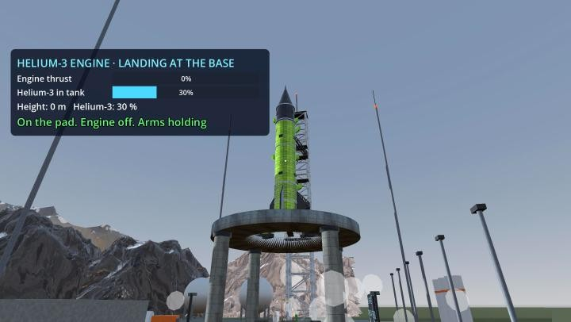
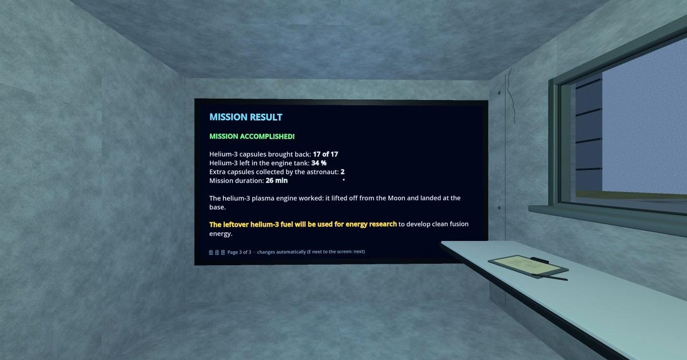

Phase 1
The base and the launch
The player starts in the base control room, in front of a screen that explains the energy problem and the mission plan. They walk out to the launch pad, climb the tower stairs (15 m) and board the ship. The countdown begins: the tower arms release the rocket and it lifts off with the blue-flame chemical engine.

Phase 2
The trip and the failure
Leaving the atmosphere, the chemical engine fails. In the cockpit, with objects floating in zero gravity, the player talks with Mission Control on Earth by choosing answers and checks the monitor (fuel, engines, damage and navigation) to give the right data. The ship continues only with the helium-3 plasma engine, which is enough to arrive but not to return.

Phase 3
Moon landing and exploration
The ship lands on a pad braking with the helium-3 engine, and the arms hold it. The astronaut climbs down the stairs and explores the lunar surface under a starry sky, with 1.62 m/s² gravity. Suit oxygen starts to drop: the player must return to the station to refill it.

Phase 4
Mining and helium-3 production
With the mining rover, the player digs regolith among 50 rocks. Some are hard basalt with no helium-3, and the rover discards them after analysis. The regolith goes to the reactor hopper, and then, in the rooms of the lunar station, the player runs each stage of the real process on its console. The ship needs between 15 and 20 capsules, a number that changes every game.

Phase 5
Lunar launch and return
With the ship loaded, the astronaut climbs the stairs and lifts off from the Moon: the helium-3 engine runs at its limit but reaches the 2.38 km/s escape velocity. The ship returns and lands on the pad at the Earth base.

Ending
Mission accomplished
Back in the room, the screen shows the result: the capsules brought back, the helium-3 left in the tank, and that the leftover helium-3 fuel will be used for energy research to develop clean fusion energy. Then the team credits appear.